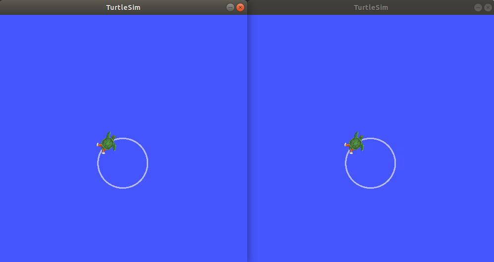

创建一个启动文件 [5388]
目标： 创建一个用于运行复杂ROS 2系统的启动文件。 [5389]
教程级别： 中级 [5286]
时间: 10分钟 [3663]
内容 [3277]
先决条件 [3124]
本教程使用 rqt_graph 和 turtlesim 包。 [5390]
您还需要使用您喜欢的文本编辑器。 [5391]
如往常一样，在每次打开新的终端时不要忘记在 :doc`每个新终端中启用ROS 2环境 <../../Beginner-CLI-Tools/Configuring-ROS2-Environment>`。 [5392]
背景 [3072]
ROS 2中的启动系统负责帮助用户描述其系统的配置，然后按照描述的方式执行它。系统的配置包括要运行的程序，运行它们的位置，要传递给它们的参数以及ROS特定的约定，使得通过为每个组件提供不同的配置，可以在整个系统中轻松地重用组件。它还负责监视启动的进程的状态，并报告和/或响应这些进程状态的变化。 [5393]
使用Python、XML或YAML编写的启动文件可以启动和停止不同的节点，并触发和执行各种事件。有关不同格式的描述，请参阅 使用 Python、XML 和 YAML 编写 ROS 2 启动文件 [464]。提供该框架的包是 launch_ros，它在ROS特定的``launch``框架下运行。 [5394]
任务 [3282]
2 编写启动文件 [5397]
让我们使用``turtlesim``包及其可执行文件来编写一个ROS 2启动文件。如上所述，这可以是Python、XML或YAML格式。 [5398]
将完整的代码复制并粘贴到``launch/turtlesim_mimic_launch.py``文件中： [5399]
from launch import LaunchDescription
from launch_ros.actions import Node
def generate_launch_description():
return LaunchDescription([
Node(
package='turtlesim',
namespace='turtlesim1',
executable='turtlesim_node',
name='sim'
),
Node(
package='turtlesim',
namespace='turtlesim2',
executable='turtlesim_node',
name='sim'
),
Node(
package='turtlesim',
executable='mimic',
name='mimic',
remappings=[
('/input/pose', '/turtlesim1/turtle1/pose'),
('/output/cmd_vel', '/turtlesim2/turtle1/cmd_vel'),
]
)
])
将完整的代码复制并粘贴到``launch/turtlesim_mimic_launch.xml``文件中： [5401]
<launch>
<node pkg="turtlesim" exec="turtlesim_node" name="sim" namespace="turtlesim1"/>
<node pkg="turtlesim" exec="turtlesim_node" name="sim" namespace="turtlesim2"/>
<node pkg="turtlesim" exec="mimic" name="mimic">
<remap from="/input/pose" to="/turtlesim1/turtle1/pose"/>
<remap from="/output/cmd_vel" to="/turtlesim2/turtle1/cmd_vel"/>
</node>
</launch>
将完整代码复制粘贴到``launch/turtlesim_mimic_launch.yaml``文件中： [5403]
launch:
- node:
pkg: "turtlesim"
exec: "turtlesim_node"
name: "sim"
namespace: "turtlesim1"
- node:
pkg: "turtlesim"
exec: "turtlesim_node"
name: "sim"
namespace: "turtlesim2"
- node:
pkg: "turtlesim"
exec: "mimic"
name: "mimic"
remap:
-
from: "/input/pose"
to: "/turtlesim1/turtle1/pose"
-
from: "/output/cmd_vel"
to: "/turtlesim2/turtle1/cmd_vel"
2.1 检查启动文件 [5404]
上述所有启动文件都是从``turtlesim``软件包中启动的三个节点系统。该系统的目标是启动两个turtlesim窗口，并使一个turtle模仿另一个turtle的移动。 [5405]
在启动这两个turtlesim节点时，它们之间唯一的区别是它们的命名空间值。唯一的命名空间允许系统在没有节点名称或主题名称冲突的情况下启动两个节点。该系统中的两个turtle都通过相同的主题接收命令并发布它们的位姿。通过唯一的命名空间，可以区分发送给不同turtle的消息。 [5406]
最后一个节点也来自于“turtlesim”软件包，但是是另一个可执行文件：“mimic”。该节点通过重新映射添加了配置详细信息。mimic``的/input/pose``话题被重新映射到``/turtlesim1/turtle1/pose``，/output/cmd_vel``话题被重新映射到/turtlesim2/turtle1/cmd_vel``。这意味着``mimic``将订阅``/turtlesim1/sim``的姿态话题，并将其重新发布到``/turtlesim2/sim``的速度命令话题中进行订阅。换句话说，``turtlesim2``将模仿``turtlesim1``的运动。 [5407]
这些导入语句引入了一些Python ``launch``模块。 [5408]
from launch import LaunchDescription
from launch_ros.actions import Node
接下来，启动描述本身开始： [5409]
def generate_launch_description():
return LaunchDescription([
])
启动描述中的前两个操作启动了两个turtlesim窗口： [5410]
Node(
package='turtlesim',
namespace='turtlesim1',
executable='turtlesim_node',
name='sim'
),
Node(
package='turtlesim',
namespace='turtlesim2',
executable='turtlesim_node',
name='sim'
),
最后一个操作使用了重新映射来启动mimic节点： [5411]
Node(
package='turtlesim',
executable='mimic',
name='mimic',
remappings=[
('/input/pose', '/turtlesim1/turtle1/pose'),
('/output/cmd_vel', '/turtlesim2/turtle1/cmd_vel'),
]
)
启动描述中的前两个操作启动了两个turtlesim窗口： [5412]
<node pkg="turtlesim" exec="turtlesim_node" name="sim" namespace="turtlesim1"/>
<node pkg="turtlesim" exec="turtlesim_node" name="sim" namespace="turtlesim2"/>
最后一个操作使用了重新映射来启动mimic节点： [5411]
<node pkg="turtlesim" exec="mimic" name="mimic">
<remap from="/input/pose" to="/turtlesim1/turtle1/pose"/>
<remap from="/output/cmd_vel" to="/turtlesim2/turtle1/cmd_vel"/>
</node>
启动描述中的前两个操作启动了两个turtlesim窗口： [5412]
- node:
pkg: "turtlesim"
exec: "turtlesim_node"
name: "sim"
namespace: "turtlesim1"
- node:
pkg: "turtlesim"
exec: "turtlesim_node"
name: "sim"
namespace: "turtlesim2"
最后一个操作使用了重新映射来启动mimic节点： [5411]
- node:
pkg: "turtlesim"
exec: "mimic"
name: "mimic"
remap:
-
from: "/input/pose"
to: "/turtlesim1/turtle1/pose"
-
from: "/output/cmd_vel"
to: "/turtlesim2/turtle1/cmd_vel"
3 ros2 launch [5413]
要运行上面创建的启动文件，请进入您之前创建的目录并运行以下命令： [5414]
cd launch
ros2 launch turtlesim_mimic_launch.py
cd launch
ros2 launch turtlesim_mimic_launch.xml
cd launch
ros2 launch turtlesim_mimic_launch.yaml
注解
可以直接启动一个启动文件（如上所示），也可以由软件包提供。当由软件包提供时，语法如下： [5415]
ros2 launch <package_name> <launch_file_name>
您已经学习了如何在 创建软件包 [4496] 中创建软件包。 [5416]
注解
对于具有启动文件的软件包，最好在您的软件包的 package.xml 中添加一个 exec_depend 依赖项，依赖于 ros2launch 软件包： [5417]
<exec_depend>ros2launch</exec_depend>
将会打开两个turtlesim窗口，并且您将看到以下``[INFO]``消息，告诉您启动了哪些节点的launch文件： [5419]
[INFO] [launch]: Default logging verbosity is set to INFO
[INFO] [turtlesim_node-1]: process started with pid [11714]
[INFO] [turtlesim_node-2]: process started with pid [11715]
[INFO] [mimic-3]: process started with pid [11716]
为了看到系统的运行情况，打开一个新的终端并在``/turtlesim1/turtle1/cmd_vel``主题上运行``ros2 topic pub``命令，使第一个乌龟开始移动： [5420]
ros2 topic pub -r 1 /turtlesim1/turtle1/cmd_vel geometry_msgs/msg/Twist "{linear: {x: 2.0, y: 0.0, z: 0.0}, angular: {x: 0.0, y: 0.0, z: -1.8}}"
您将看到两只乌龟都按照相同的路径移动。 [5421]
4 使用rqt_graph对系统进行内省 [5422]
当系统仍在运行时，打开一个新的终端并运行``rqt_graph``，以更好地了解launch文件中节点之间的关系。 [5423]
运行以下命令： [4084]
rqt_graph

一个隐藏节点（您运行的``ros2 topic pub``命令）在左侧发布数据到``/turtlesim1/turtle1/cmd_vel``主题，而``/turtlesim1/sim``节点订阅该主题。图中的其余部分展示了之前描述的内容：mimic``订阅/turtlesim1/sim``的姿态主题，并发布到``/turtlesim2/sim``的速度命令主题。 [5424]